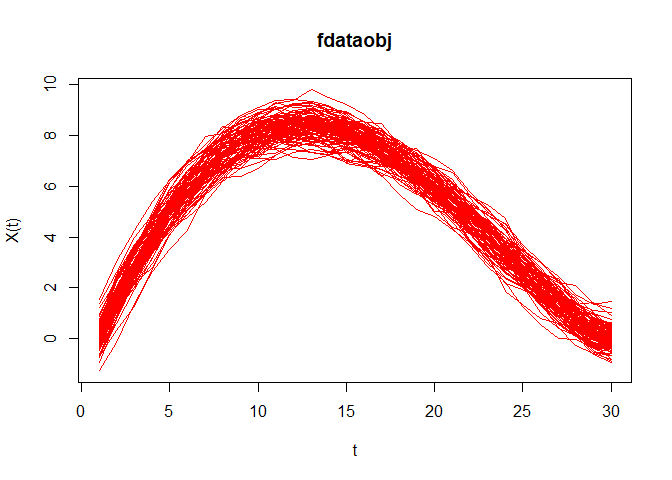

El paquete qcr en R tiene como propósito principal ofrecer herramientas para crear y analizar gráficos de control de calidad. Está orientado a simplificar el seguimiento y control de procesos dentro del ámbito del Control Estadístico de Calidad (SPC, por su nombre en inglés), ayudando a los usuarios a determinar si un proceso opera bajo control estadístico y a identificar posibles fuentes de variabilidad que puedan influir en su rendimiento.
Instalación
You can install the development version of r6qcr from GitHub with:
# install.packages("pak")
pak::pak("Bryanjat/r6qcr")Ejemplos
## librerias
suppressWarnings(suppressMessages(library(qcr)))El paquete qcr en R está diseñado para proporcionar herramientas que permitan la creación y el análisis de gráficos de control, los cuales son fundamentales para monitorear y controlar procesos dentro del marco del Control Estadístico de Calidad (SPC, por sus siglas en inglés). Estos gráficos ayudan a los usuarios a evaluar si un proceso se encuentra bajo control estadístico y a identificar posibles fuentes de variabilidad que puedan afectar su desempeño.
fdqcd (Functional data quality control)
Los datos funcionales son observaciones que se registran como funciones continuas en un dominio, como tiempo, espacio o frecuencia.
m <- 30
tt<-seq(0,1,len=m) # Crea un vector de 0 1 partido en 30
mu<-30 * tt * (1 - tt)^(3/2)
n0 <- 100
set.seed(12345) # Semilla
mdata<-matrix(NA,ncol=m,nrow=n0) # Crea una matriz de NA de nxm
sigma <- exp(-3*as.matrix(dist(tt))/0.9)
for (i in 1:n0) mdata[i,]<- mu+0.5*mvrnorm(mu = mu,Sigma = sigma )
fdchart <- fdqcd(mdata)
plot(fdchart,type="l",col="red")
npqcs.r
El gráfico R es un tipo de gráfico de control que se utiliza en el Control Estadístico de Calidad para monitorear la variabilidad dentro de los subgrupos de un proceso. Evalúa si la dispersión (rango) de los datos en cada subgrupo está bajo control estadístico.
set.seed(356)
mu<-c(0,0)
Sigma<- matrix(c(1,0,0,1),nrow = 2,ncol = 2)
u <- c(2,2)
S <- matrix(c(4,0,0,4),nrow = 2,ncol = 2)
G <- rmvnorm(540, mean = mu, sigma = Sigma)
x<- rmvnorm(40,mean=u,sigma = S)
x <- rbind(G[501:540,],x)
M <- G[1:500,]
data.npqcd <- npqcd(x,M)
str(data.npqcd)
#> List of 2
#> $ x: num [1:80, 1:2, 1] 0.995 -1.274 -1.174 -0.347 0.931 ...
#> $ G: num [1:500, 1:2] 0.306 -0.322 1.389 1.438 -0.784 ...
#> - attr(*, "data.name")= chr "DATA"
#> - attr(*, "type.data")= chr "Multivariate"
#> - attr(*, "class")= chr [1:2] "npqcd" "list"
res.npqcs <- npqcs.r(data.npqcd,method = "Liu", alpha=0.025)
str(res.npqcs)
#> List of 9
#> $ npqcd :List of 2
#> ..$ x: num [1:80, 1:2, 1] 0.995 -1.274 -1.174 -0.347 0.931 ...
#> ..$ G: num [1:500, 1:2] 0.306 -0.322 1.389 1.438 -0.784 ...
#> ..- attr(*, "data.name")= chr "DATA"
#> ..- attr(*, "type.data")= chr "Multivariate"
#> ..- attr(*, "class")= chr [1:2] "npqcd" "list"
#> $ type : chr "r"
#> $ depth.data: num [1:80, 1] 0.0243 0.0866 0.0292 0.2412 0.1214 ...
#> $ statistics: num [1:80, 1] 0.242 0.532 0.268 0.974 0.666 0.268 0.42 0.136 0.824 0.118 ...
#> $ alpha : num 0.025
#> $ limits : Named num [1:2] 0.025 0.5
#> ..- attr(*, "names")= chr [1:2] "lcl" "cl"
#> $ data.name : chr "DATA"
#> $ method : chr "Liu"
#> $ violations: int [1:25] 42 43 44 46 48 49 50 52 53 54 ...
#> - attr(*, "class")= chr [1:2] "npqcs.r" "npqcs"
summary(res.npqcs)
#>
#> Summary of group statistics:
#> V1
#> Min. :0.0140
#> 1st Qu.:0.0140
#> Median :0.1970
#> Mean :0.3018
#> 3rd Qu.:0.4810
#> Max. :0.9760
#>
#> Number of quality characteristics: 2
#> Number of samples or observations: 80
#> Number of observations or sample size: 1
#> Control limits:
#> lcl cl
#> 0.025 0.500
#>
#> Beyond limits of control:
#> [1] 0.014 0.014 0.014 0.014 0.014 0.014 0.014 0.014 0.014 0.014 0.014 0.014
#> [13] 0.014 0.014 0.014 0.014 0.016 0.014 0.014 0.014 0.014 0.014 0.014 0.014
#> [25] 0.014
plot(res.npqcs,title =" r Control Chart")